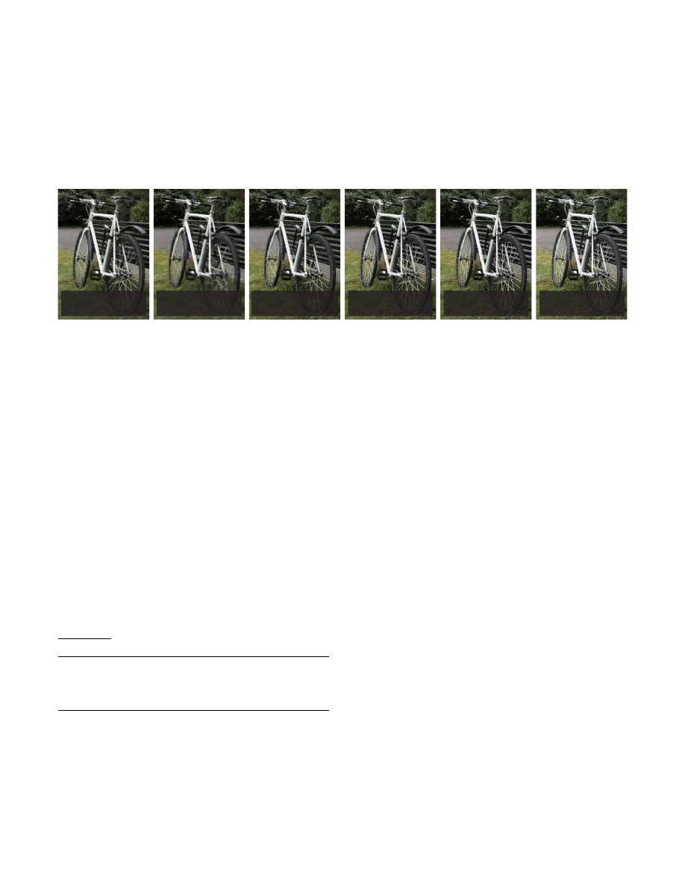
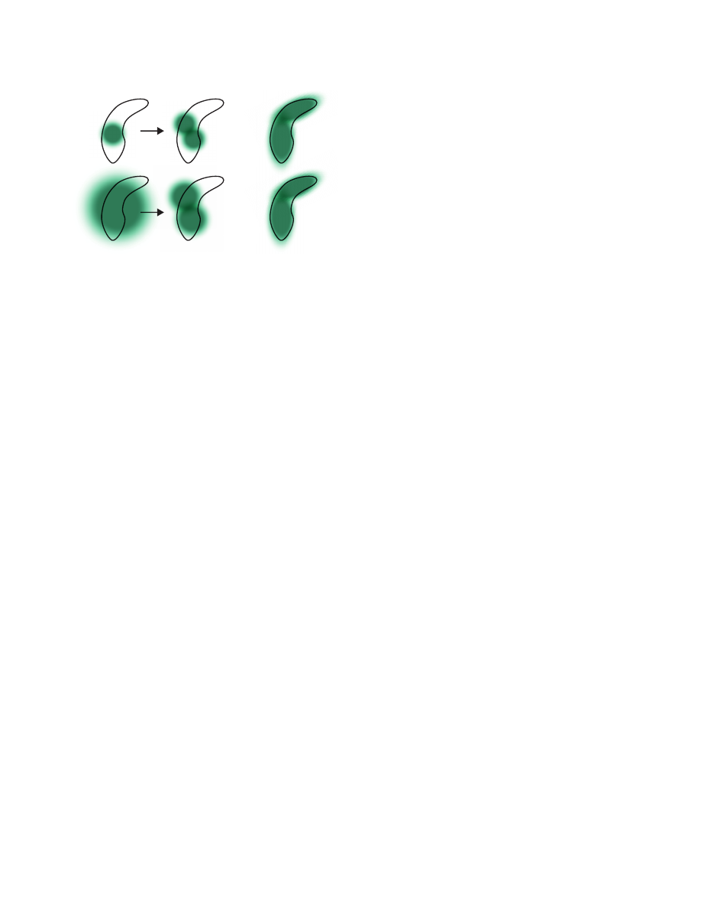
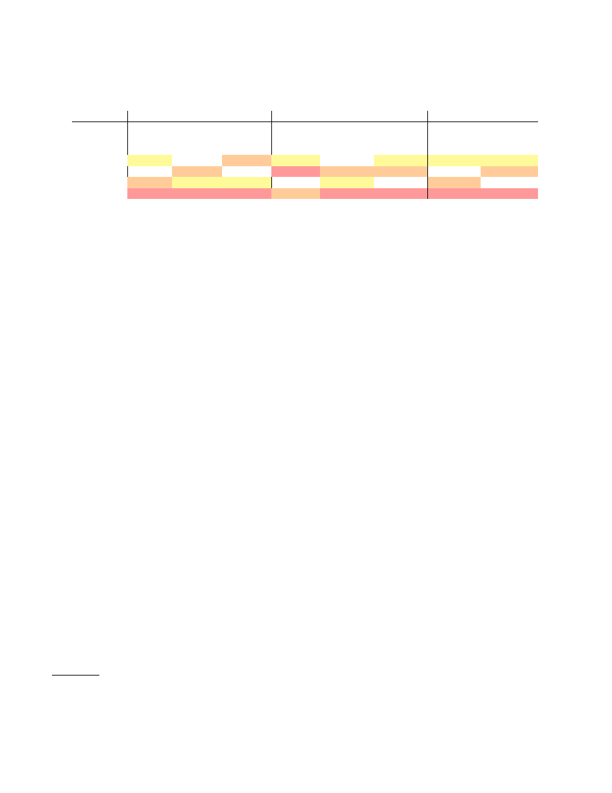
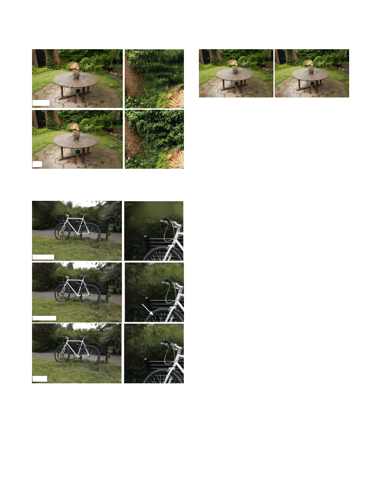
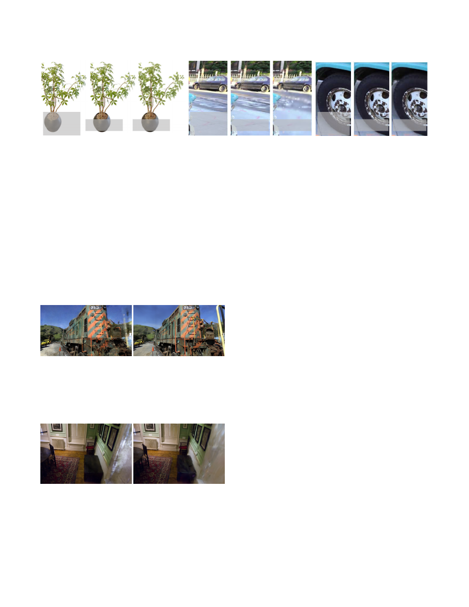
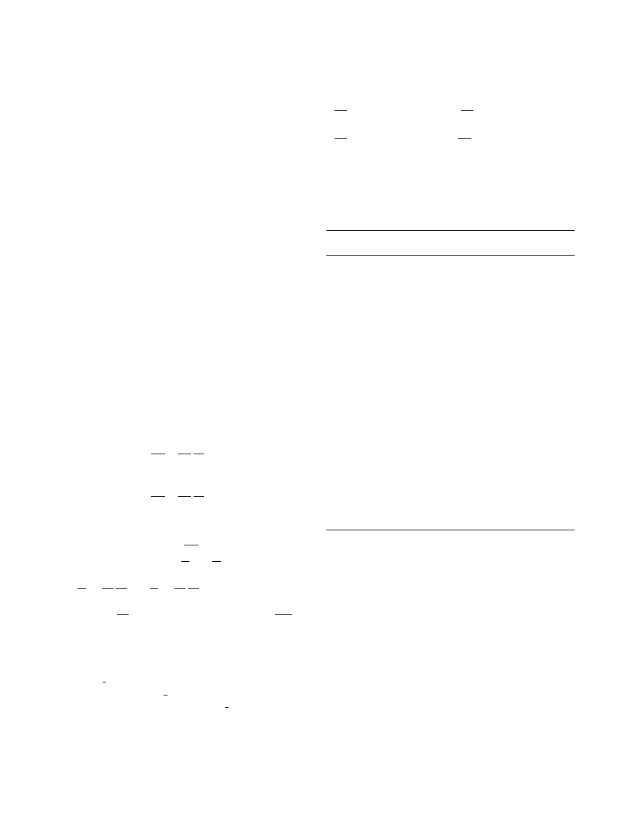
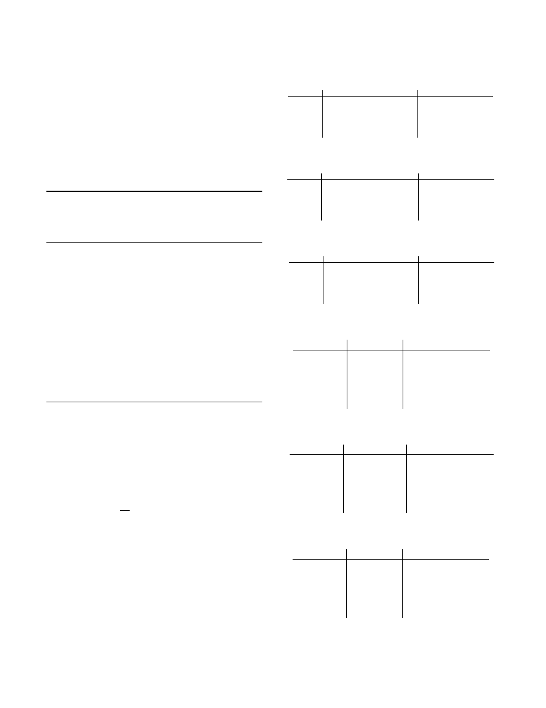

3D Gaussian Splatting for Real-Time Radiance Field Rendering
BERNHARD KERBL
∗
,
Inria, Université Côte d’Azur, France
GEORGIOS KOPANAS
∗
,
Inria, Université Côte d’Azur, France
THOMAS LEIMKÜHLER,
Max-Planck-Institut für Informatik, Germany
GEORGE DRET TAKIS,
Inria, Université Côte d’Azur, France
Ground Truth
InstantNGP
(9.2
fps)
Plenoxels
(8.2 fps)
Train: 7min, PSNR: 22.1
Train: 26min, PSNR: 21.9
Mip-NeRF360
(0.071 fps)
Train: 48
h, PSNR: 24.3
Ours
(135
fps)
Train: 6
min, PSNR: 23.6
Ours
(93
fps)
Train: 51min, PSNR: 25.2
Fig. 1.
Our method achieves real-time rendering of radiance fields with quality that equals the previous method with the best quality [Barron et al. 2022],
while only requiring optimization times competitive with the fastest previous methods [Fridovich-Keil and Yu et al. 2022; Müller et al. 2022]. Key to this
performance is a novel 3D Gaussian scene representation coupled with a real-time differentiable renderer, which offers significant speedup to both scene
optimization and novel view synthesis. Note that for comparable training times to InstantNGP [Müller et al. 2022], we achieve similar quality to theirs; while
this is the maximum quality they reach, by training for 51min we achieve state-of-the-art quality, even slightly better than Mip-NeRF360 [Barron et al. 2022].
Radiance Field methods have recently revolutionized novel-view synthesis
of scenes captured with multiple photos or videos. However, achieving high
visual quality still requires neural networks that are costly to train and ren-
der, while recent faster methods inevitably trade off speed for quality. For
unbounded and complete scenes (rather than isolated objects) and 1080p
resolution rendering, no current method can achieve real-time display rates.
We introduce three key elements that allow us to achieve state-of-the-art
visual quality while maintaining competitive training times and importantly
allow high-quality real-time (
≥
30 fps) novel-view synthesis at 1080p resolu-
tion. First, starting from sparse points produced during camera calibration,
we represent the scene with 3D Gaussians that preserve desirable proper-
ties of continuous volumetric radiance fields for scene optimization while
avoiding unnecessary computation in empty space; Second, we perform
interleaved optimization/density control of the 3D Gaussians, notably opti-
mizing anisotropic covariance to achieve an accurate representation of the
scene; Third, we develop a fast visibility-aware rendering algorithm that
supports anisotropic splatting and both accelerates training and allows real-
time rendering. We demonstrate state-of-the-art visual quality and real-time
rendering on several established datasets.
CCS Concepts: •
Computing methodologies
→
Rendering
;
Point-based
models
;
Rasterization
;
Machine learning approaches
.
∗
Both authors contributed equally to the paper.
Authors’ addresses: Bernhard Kerbl, bernhard.kerbl@inria.fr, Inria, Université Côte
d’Azur, France; Georgios Kopanas, georgios.kopanas@inria.fr, Inria, Université Côte
d’Azur,
France;
Thomas
Leimkühler,
thomas.leimkuehler@mpi- inf.mpg.de,
Max-
Planck-Institut für Informatik, Germany; George Drettakis, george.drettakis@inria.fr,
Inria, Université Côte d’Azur, France.
Publication rights licensed to ACM. ACM acknowledges that this contribution was
authored or co-authored by an employee, contractor or affiliate of a national govern-
ment. As such, the Government retains a nonexclusive, royalty-free right to publish or
reproduce this article, or to allow others to do so, for Government purposes only.
© 2023 Copyright held by the owner/author(s). Publication rights licensed to ACM.
0730-0301/2023/8-ART1 $15.00
https://doi.org/10.1145/3592433
Additional Key Words and Phrases: novel view synthesis, radiance fields, 3D
gaussians, real-time rendering
ACM Reference Format:
Bernhard Kerbl, Georgios Kopanas, Thomas Leimkühler, and George Dret-
takis. 2023. 3D Gaussian Splatting for Real-Time Radiance Field Render-
ing.
ACM Trans. Graph.
42, 4, Article 1 (August 2023), 14 pages. https:
//doi.org/10.1145/3592433
1
INTRODUCTION
Meshes and points are the most common 3D scene representations
because they are explicit and are a good fit for fast GP U/CUDA-based
rasterization. In contrast, recent Neural Radiance Field (NeRF) meth-
ods build on continuous scene representations, typically optimizing
a Multi-Layer Perceptron (MLP) using volumetric ray-marching for
novel-view synthesis of captured scenes. Similarly, the most efficient
radiance field solutions to date build on continuous representations
by interpolating values stored in, e.g., voxel [Fridovich-Keil and Yu
et al. 2022] or hash [Müller et al. 2022] grids or points [Xu et al. 2022].
While the continuous nature of these methods helps optimization,
the stochastic sampling required for rendering is costly and can
result in noise. We introduce a new approach that combines the best
of both worlds: our 3D Gaussian representation allows optimization
with state-of-the-art (SOTA) visual quality and competitive training
times, while our tile-based splatting solution ensures real-time ren-
dering at SOTA quality for 1080p resolution on several previously
published datasets [Barron et al. 2022; Hedman et al. 2018; Knapitsch
et al. 2017] (see Fig. 1).
Our goal is to allow real-time rendering for scenes captured with
multiple photos, and create the representations with optimization
times as fast as the most efficient previous methods for typical
real scenes. Recent methods achieve fast training [Fridovich-Keil
ACM Trans. Graph., Vol. 42, No. 4, Article 1. Publication date: August 2023.
arXiv:2308.04079v1 [cs.GR] 8 Aug 2023

1:2
•
Bernhard Kerbl, Georgios Kopanas, Thomas Leimkühler, and George Drettakis
and Yu et al. 2022; Müller et al. 2022], but struggle to achieve the
visual quality obtained by the current SOTA NeRF methods, i.e.,
Mip-NeRF360 [Barron et al. 2022], which requires up to 48 hours of
training time. The fast – but lower-quality – radiance field methods
can achieve interactive rendering times depending on the scene
(10-15 frames per second), but fall short of real-time rendering
at
high resolution.
Our solution builds on three main components. We first intro-
duce
3D Gaussians
as a flexible and expressive scene representation.
We start with the same input as previous NeRF-like methods, i.e.,
cameras calibrated with Structure-from-Motion (SfM) [Snavely et al.
2006] and initialize the set of 3D Gaussians with the sparse point
cloud produced for free as part of the SfM process. In contrast to
most point-based solutions that require Multi-View Stereo (MVS)
data [Aliev et al. 2020; Kopanas et al. 2021; Rückert et al. 2022], we
achieve high-quality results with only SfM points as input. Note
that for the NeRF-synthetic dataset, our method achieves high qual-
ity even with random initialization. We show that 3D Gaussians
are an excellent choice, since they are a differentiable volumetric
representation, but they can also be rasterized very efficiently by
projecting them to 2D, and applying standard
𝛼
-blending, using an
equivalent image formation model as NeRF. The second component
of our method is optimization of the properties of the 3D Gaussians
– 3D position, opacity
𝛼
, anisotropic covariance, and spherical har-
monic (SH) coefficients – interleaved with adaptive density control
steps, where we add and occasionally remove 3D Gaussians during
optimization. The optimization procedure produces a reasonably
compact, unstructured, and precise representation of the scene (1-5
million Gaussians for all scenes tested). The third and final element
of our method is our real-time rendering solution that uses fast GP U
sorting algorithms and is inspired by tile-based rasterization, fol-
lowing recent work [Lassner and Zollhofer 2021]. However, thanks
to our 3D Gaussian representation, we can perform anisotropic
splatting that respects visibility ordering – thanks to sorting and
𝛼
-
blending – and enable a fast and accurate backward pass by tracking
the traversal of as many sorted splats as required.
To summarize, we provide the following contributions:
•
The introduction of anisotropic 3D Gaussians as a high-quality,
unstructured representation of radiance fields.
•
An optimization method of 3D Gaussian properties, inter-
leaved with adaptive density control that creates high-quality
representations for captured scenes.
•
A fast, differentiable rendering approach for the GP U, which
is visibility-aware, allows anisotropic splatting and fast back-
propagation to achieve high-quality novel view synthesis.
Our results on previously published datasets show that we can opti-
mize our 3D Gaussians from multi-view captures and achieve equal
or better quality than the best quality previous implicit radiance
field approaches. We also can achieve training speeds and quality
similar to the fastest methods and importantly provide the first
real-time rendering
with high quality for novel-view synthesis.
2
RELATED WORK
We first briefly overview traditional reconstruction, then discuss
point-based rendering and radiance field work, discussing their
similarity; radiance fields are a vast area, so we focus only on directly
related work. For complete coverage of the field, please see the
excellent recent surveys [Tewari et al. 2022; Xie et al. 2022].
2.1
Traditional Scene Reconstruction and Rendering
The first novel-view synthesis approaches were based on light fields,
first densely sampled [Gortler et al. 1996; Levoy and Hanrahan 1996]
then allowing unstructured capture [Buehler et al. 2001]. The advent
of Structure-from-Motion (SfM) [Snavely et al. 2006] enabled an
entire new domain where a collection of photos could be used to
synthesize novel views. SfM estimates a sparse point cloud during
camera calibration, that was initially used for simple visualization
of 3D space. Subsequent multi-view stereo (MVS) produced im-
pressive full 3D reconstruction algorithms over the years [Goesele
et al. 2007], enabling the development of several view synthesis
algorithms [Chaurasia et al. 2013; Eisemann et al. 2008; Hedman
et al. 2018; Kopanas et al. 2021]. All these methods
re-project
and
blend
the input images into the novel view camera, and use the
geometry to guide this re-projection. These methods produced ex-
cellent results in many cases, but typically cannot completely re-
cover from unreconstructed regions, or from “over-reconstruction”,
when MVS generates inexistent geometry. Recent neural render-
ing algorithms [Tewari et al. 2022] vastly reduce such artifacts and
avoid the overwhelming cost of storing all input images on the GP U,
outperforming these methods on most fronts.
2.2
Neural Rendering and Radiance Fields
Deep learning techniques were adopted early for novel-view synthe-
sis [Flynn et al. 2016; Zhou et al. 2016]; CNNs were used to estimate
blending weights [Hedman et al. 2018], or for texture-space solutions
[Riegler and Koltun 2020; Thies et al. 2019]. The use of MVS-based
geometry is a major drawback of most of these methods; in addition,
the use of CNNs for final rendering frequently results in
temporal
flickering.
Volumetric representations for novel-view synthesis were ini-
tiated by Soft3D [Penner and Zhang 2017]; deep-learning tech-
niques coupled with volumetric ray-marching were subsequently
proposed [Henzler et al. 2019; Sitzmann et al. 2019] building on a con-
tinuous differentiable density field to represent geometry. Rendering
using volumetric ray-marching has a significant cost due to the large
number of samples required to query the volume. Neural Radiance
Fields (NeRFs) [Mildenhall et al. 2020] introduced importance sam-
pling and positional encoding to improve quality, but used a large
Multi-Layer Perceptron negatively affecting speed. The success of
NeRF has resulted in an explosion of follow-up methods that address
quality and speed, often by introducing regularization strategies; the
current state-of-the-art in image quality for novel-view synthesis is
Mip-NeRF360 [Barron et al. 2022]. While the rendering quality is
outstanding, training and rendering times remain extremely high;
we are able to equal or in some cases surpass this quality while
providing fast training and real-time rendering.
The most recent methods have focused on faster training and/or
rendering mostly by exploiting three design choices: the use of spa-
tial data structures to store (neural) features that are subsequently
interpolated during volumetric ray-marching, different encodings,
ACM Trans. Graph., Vol. 42, No. 4, Article 1. Publication date: August 2023.

3D Gaussian Splatting for Real-Time Radiance Field Rendering
•
1:3
and MLP capacity. Such methods include different variants of space
discretization [Chen et al. 2022b,a; Fridovich-Keil and Yu et al. 2022;
Garbin et al. 2021; Hedman et al. 2021; Reiser et al. 2021; Takikawa
et al. 2021; Wu et al. 2022; Yu et al. 2021], codebooks [Takikawa
et al. 2022], and encodings such as hash tables [Müller et al. 2022],
allowing the use of a smaller MLP or foregoing neural networks
completely [Fridovich-Keil and Yu et al. 2022; Sun et al. 2022].
Most notable of these methods are InstantNGP [Müller et al. 2022]
which uses a hash grid and an occupancy grid to accelerate compu-
tation and a smaller MLP to represent density and appearance; and
Plenoxels [Fridovich-Keil and Yu et al. 2022] that use a sparse voxel
grid to interpolate a continuous density field, and are able to forgo
neural networks altogether. Both rely on Spherical Harmonics: the
former to represent directional effects directly, the latter to encode
its inputs to the color network. While both provide outstanding
results, these methods can still struggle to represent empty space
effectively, depending in part on the scene/capture type. In addition,
image quality is limited in large part by the choice of the structured
grids used for acceleration, and rendering speed is hindered by the
need to query many samples for a given ray-marching step. The un-
structured, explicit GP U-friendly 3D Gaussians we use achieve faster
rendering speed and better quality
without
neural components.
2.3
Point-Based Rendering and Radiance Fields
Point-based methods efficiently render disconnected and unstruc-
tured geometry samples (i.e., point clouds) [Gross and Pfister 2011].
In its simplest form, point sample rendering [Grossman and Dally
1998] rasterizes an unstructured set of points with a fixed size, for
which it may exploit natively supported point types of graphics APIs
[Sainz and Pajarola 2004] or parallel software rasterization on the
GP U [Laine and Karras 2011; Schütz et al. 2022]. While true to the
underlying data, point sample rendering suffers from holes, causes
aliasing, and is strictly discontinuous. Seminal work on high-quality
point-based rendering addresses these issues by “splatting” point
primitives with an extent larger than a pixel, e.g., circular or elliptic
discs, ellipsoids, or surfels [Botsch et al. 2005; Pfister et al. 2000; Ren
et al. 2002; Zwicker et al. 2001b].
There has been recent interest in
differentiable
point-based render-
ing techniques [Wiles et al. 2020; Yifan et al. 2019]. Points have been
augmented with neural features and rendered using a CNN [Aliev
et al. 2020; Rückert et al. 2022] resulting in fast or even real-time
view synthesis; however they still depend on MVS for the initial
geometry, and as such inherit its artifacts, most notably over- or
under-reconstruction in hard cases such as featureless/shiny areas
or thin structures.
Point-based
𝛼
-blending and NeRF-style volumetric rendering
share essentially the same image formation model. Specifically, the
color
𝐶
is given by volumetric rendering along a ray:
𝐶
=
𝑁
∑︁
𝑖
=
1
𝑇
𝑖
(
1
−
exp
(−
𝜎
𝑖
𝛿
𝑖
))
c
𝑖
with
𝑇
𝑖
=
exp
©
«
−
𝑖
−
1
∑︁
𝑗
=
1
𝜎
𝑗
𝛿
𝑗
ª
®
¬
,
(1)
where samples of density
𝜎
, transmittance
𝑇
, and color
c
are taken
along the ray with intervals
𝛿
𝑖
. This can be re-written as
𝐶
=
𝑁
∑︁
𝑖
=
1
𝑇
𝑖
𝛼
𝑖
c
𝑖
,
(2)
with
𝛼
𝑖
=
(
1
−
exp
(−
𝜎
𝑖
𝛿
𝑖
))
and
𝑇
𝑖
=
𝑖
−
1
Ö
𝑗
=
1
(
1
−
𝛼
𝑖
)
.
A typical neural point-based approach (e.g., [Kopanas et al. 2022,
2021]) computes the color
𝐶
of a pixel by blending
N
ordered points
overlapping the pixel:
𝐶
=
∑︁
𝑖
∈ N
𝑐
𝑖
𝛼
𝑖
𝑖
−
1
Ö
𝑗
=
1
(
1
−
𝛼
𝑗
)
,
(3)
where
c
𝑖
is the color of each point and
𝛼
𝑖
is given by evaluating a
2D Gaussian with covariance
Σ
[Yifan et al. 2019] multiplied with a
learned per-point opacity.
From Eq. 2 and Eq. 3, we can clearly see that the image formation
model is the same. However, the rendering algorithm is very differ-
ent. NeRFs are a continuous representation implicitly representing
empty/occupied space; expensive random sampling is required to
find the samples in Eq. 2 with consequent noise and computational
expense. In contrast, points are an unstructured, discrete represen-
tation that is flexible enough to allow creation, destruction, and
displacement of geometry similar to NeRF. This is achieved by opti-
mizing opacity and positions, as shown by previous work [Kopanas
et al. 2021], while avoiding the shortcomings of a full volumetric
representation.
Pulsar [Lassner and Zollhofer 2021] achieves fast
sphere
rasteri-
zation which inspired our tile-based and sorting renderer. However,
given the analysis above, we want to maintain (approximate) con-
ventional
𝛼
-blending on sorted splats to have the advantages of vol-
umetric representations: Our rasterization respects visibility order
in contrast to their order-independent method. In addition, we back-
propagate gradients on all splats in a pixel and rasterize anisotropic
splats. These elements all contribute to the high visual quality of
our results (see Sec. 7.3). In addition, previous methods mentioned
above also use CNNs for rendering, which results in temporal in-
stability. Nonetheless, the rendering speed of Pulsar [Lassner and
Zollhofer 2021] and ADOP [Rückert et al. 2022] served as motivation
to develop our fast rendering solution.
While focusing on specular effects, the diffuse point-based ren-
dering track of Neural Point Catacaustics [Kopanas et al. 2022]
overcomes this temporal instability by using an MLP, but still re-
quired MVS geometry as input. The most recent method [Zhang
et al. 2022] in this category does not require MVS, and also uses
SH for directions; however, it can only handle scenes of one object
and needs masks for initialization. While fast for small resolutions
and low point counts, it is unclear how it can scale to scenes of
typical datasets [Barron et al. 2022; Hedman et al. 2018; Knapitsch
et al. 2017]. We use 3D Gaussians for a more flexible scene rep-
resentation, avoiding the need for MVS geometry and achieving
real-time rendering thanks to our tile-based rendering algorithm
for the projected Gaussians.
ACM Trans. Graph., Vol. 42, No. 4, Article 1. Publication date: August 2023.
1:4
•
Bernhard Kerbl, Georgios Kopanas, Thomas Leimkühler, and George Drettakis
A recent approach [Xu et al. 2022] uses points to represent a
radiance field with a radial basis function approach. They employ
point pruning and densification techniques during optimization, but
use volumetric ray-marching and cannot achieve real-time display
rates.
In the domain of human performance capture, 3D Gaussians have
been used to represent captured human bodies [Rhodin et al. 2015;
Stoll et al. 2011]; more recently they have been used with volumetric
ray-marching for vision tasks [Wang et al. 2023]. Neural volumetric
primitives have been proposed in a similar context [Lombardi et al.
2021]. While these methods inspired the choice of 3D Gaussians as
our scene representation, they focus on the specific case of recon-
structing and rendering a single isolated object (a human body or
face), resulting in scenes with small depth complexity. In contrast,
our optimization of
anisotropic
covariance, our interleaved optimiza-
tion/density control, and efficient depth sorting for rendering allow
us to handle complete, complex scenes including background, both
indoors and outdoors and with large depth complexity.
3
OVERVIEW
The input to our method is a set of images of a static scene, together
with the corresponding cameras calibrated by SfM [Schönberger
and Frahm 2016] which produces a sparse point cloud as a side-
effect. From these points we create a set of 3D Gaussians (Sec. 4),
defined by a position (mean), covariance matrix and opacity
𝛼
, that
allows a very flexible optimization regime. This results in a reason-
ably compact representation of the 3D scene, in part because highly
anisotropic volumetric splats can be used to represent fine structures
compactly. The directional appearance component (color) of the
radiance field is represented via spherical harmonics (SH), following
standard practice [Fridovich-Keil and Yu et al. 2022; Müller et al.
2022]. Our algorithm proceeds to create the radiance field represen-
tation (Sec. 5) via a sequence of optimization steps of 3D Gaussian
parameters, i.e., position, covariance,
𝛼
and SH coefficients inter-
leaved with operations for adaptive control of the Gaussian density.
The key to the efficiency of our method is our tile-based rasterizer
(Sec. 6) that allows
𝛼
-blending of anisotropic splats, respecting visi-
bility order thanks to fast sorting. Out fast rasterizer also includes
a fast backward pass by tracking accumulated
𝛼
values, without a
limit on the number of Gaussians that can receive gradients. The
overview of our method is illustrated in Fig. 2.
4
DIFFERENTIABLE 3D GAUSSIAN SPLAT TING
Our goal is to optimize a scene representation that allows high-
quality novel view synthesis, starting from a sparse set of (SfM)
points without normals. To do this, we need a primitive that inherits
the properties of differentiable volumetric representations, while
at the same time being unstructured and explicit to allow very fast
rendering. We choose 3D Gaussians, which are differentiable and
can be easily projected to 2D splats allowing fast
𝛼
-blending for
rendering.
Our representation has similarities to previous methods that use
2D points [Kopanas et al. 2021; Yifan et al. 2019] and assume each
point is a small planar circle with a normal. Given the extreme
sparsity of SfM points it is very hard to estimate normals. Similarly,
optimizing very noisy normals from such an estimation would be
very challenging. Instead, we model the geometry as a set of 3D
Gaussians that do not require normals. Our Gaussians are defined
by a full 3D covariance matrix
Σ
defined in world space [Zwicker
et al. 2001a] centered at point (mean)
𝜇
:
𝐺
(
𝑥
)
=
𝑒
−
1
2
(
𝑥
)
𝑇
Σ
−
1
(
𝑥
)
(4)
. This Gaussian is multiplied by
𝛼
in our blending process.
However, we need to project our 3D Gaussians to 2D for rendering.
Zwicker et al. [2001a] demonstrate how to do this projection to
image space. Given a viewing transformation
𝑊
the covariance
matrix
Σ
′
in camera coordinates is given as follows:
Σ
′
=
𝐽𝑊
Σ
𝑊
𝑇
𝐽
𝑇
(5)
where
𝐽
is the Jacobian of the affine approximation of the projective
transformation. Zwicker et al. [2001a] also show that if we skip the
third row and column of
Σ
′
, we obtain a 2
×
2 variance matrix with
the same structure and properties as if we would start from planar
points with normals, as in previous work [Kopanas et al. 2021].
An obvious approach would be to directly optimize the covariance
matrix
Σ
to obtain 3D Gaussians that represent the radiance field.
However, covariance matrices have physical meaning only when
they are positive semi-definite. For our optimization of all our pa-
rameters, we use gradient descent that cannot be easily constrained
to produce such valid matrices, and update steps and gradients can
very easily create invalid covariance matrices.
As a result, we opted for a more intuitive, yet equivalently ex-
pressive representation for optimization. The covariance matrix
Σ
of a 3D Gaussian is analogous to describing the configuration of an
ellipsoid. Given a scaling matrix
𝑆
and rotation matrix
𝑅
, we can
find the corresponding
Σ
:
Σ
=
𝑅𝑆 𝑆
𝑇
𝑅
𝑇
(6)
To allow independent optimization of both factors, we store them
separately: a 3D vector
𝑠
for scaling and a quaternion
𝑞
to represent
rotation. These can be trivially converted to their respective matrices
and combined, making sure to normalize
𝑞
to obtain a valid unit
quaternion.
To avoid significant overhead due to automatic differentiation
during training, we derive the gradients for all parameters explicitly.
Details of the exact derivative computations are in appendix A.
This representation of anisotropic covariance – suitable for op-
timization – allows us to optimize 3D Gaussians to adapt to the
geometry of different shapes in captured scenes, resulting in a fairly
compact representation. Fig. 3 illustrates such cases.
5
OPTIMIZATION WITH ADAPTIVE DENSITY
CONTROL OF 3D GAUSSIANS
The core of our approach is the optimization step, which creates
a dense set of 3D Gaussians accurately representing the scene for
free-view synthesis. In addition to positions
𝑝
,
𝛼
, and covariance
Σ
, we also optimize SH coefficients representing color
𝑐
of each
Gaussian to correctly capture the view-dependent appearance of
the scene. The optimization of these parameters is interleaved with
steps that control the density of the Gaussians to better represent
the scene.
ACM Trans. Graph., Vol. 42, No. 4, Article 1. Publication date: August 2023.

3D Gaussian Splatting for Real-Time Radiance Field Rendering
•
1:5
Differentiable
Tile Rasterizer
Adaptive
Density Control
Projection
Initialization
SfM Points
3D Gaussians
Image
Camera
Gradient Flow
Operation Flow
Fig. 2.
Optimization starts with the sparse SfM point cloud and creates a set of 3D Gaussians. We then optimize and adaptively control the density of this set
of Gaussians. During optimization we use our fast tile-based renderer, allowing competitive training times compared to SOTA fast radiance field methods.
Once trained, our renderer allows real-time navigation for a wide variety of scenes.
Original
Shrunken
Gaussians
Fig. 3.
We visualize the 3D Gaussians after optimization by shrinking them
60% (far right). This clearly shows the anisotropic shapes of the 3D Gaussians
that compactly represent complex geometry after optimization. Left the
actual rendered image.
5.1
Optimization
The optimization is based on successive iterations of rendering and
comparing the resulting image to the training views in the captured
dataset. Inevitably, geometry may be incorrectly placed due to the
ambiguities of 3D to 2D projection. Our optimization thus needs to
be able to
create
geometry and also
destroy
or
move
geometry if it
has been incorrectly positioned. The quality of the parameters of the
covariances of the 3D Gaussians is critical for the compactness of
the representation since large homogeneous areas can be captured
with a small number of large anisotropic Gaussians.
We use Stochastic Gradient Descent techniques for optimization,
taking full advantage of standard GP U-accelerated frameworks,
and the ability to add custom CUDA kernels for some operations,
following recent best practice [Fridovich-Keil and Yu et al. 2022;
Sun et al. 2022]. In particular, our fast rasterization (see Sec. 6) is
critical in the efficiency of our optimization, since it is the main
computational bottleneck of the optimization.
We use a sigmoid activation function for
𝛼
to constrain it in
the
[
0
−
1
)
range and obtain smooth gradients, and an exponential
activation function for the scale of the covariance for similar reasons.
We estimate the initial covariance matrix as an isotropic Gaussian
with axes equal to the mean of the distance to the closest three points.
We use a standard exponential decay scheduling technique similar
to Plenoxels [Fridovich-Keil and Yu et al. 2022], but for positions
only. The loss function is
L
1
combined with a D-SSIM term:
L
=
(
1
−
𝜆
)L
1
+
𝜆
L
D-SSIM
(7)
We use
𝜆
=
0
.
2 in all our tests. We provide details of the learning
schedule and other elements in Sec. 7.1.
5.2
Adaptive Control of Gaussians
We start with the initial set of sparse points from SfM and then apply
our method to adaptively control the number of Gaussians and their
density over unit volume
1
, allowing us to go from an initial sparse
set of Gaussians to a denser set that better represents the scene, and
with correct parameters. After optimization warm-up (see Sec. 7.1),
we densify every 100 iterations and remove any Gaussians that are
essentially transparent, i.e., with
𝛼
less than a threshold
𝜖
𝛼
.
Our adaptive control of the Gaussians needs to populate empty
areas. It focuses on regions with missing geometric features (“under-
reconstruction”), but also in regions where Gaussians cover large
areas in the scene (which often correspond to “over-reconstruction”).
We observe that both have
large
view-space positional gradients.
Intuitively, this is likely because they correspond to regions that are
not yet well reconstructed, and the optimization tries to move the
Gaussians to correct this.
Since both cases are good candidates for densification,
we den-
sify Gaussians with an average magnitude of view-space position
gradients above a threshold
𝜏
pos
, which we set to 0
.
0002 in our tests.
We next present details of this process, illustrated in Fig. 4.
For small Gaussians that are in under-reconstructed regions, we
need to cover the new geometry that must be created. For this, it is
preferable to clone the Gaussians, by simply creating a copy of the
same size, and moving it in the direction of the positional gradient.
On the other hand, large Gaussians in regions with high variance
need to be split into smaller Gaussians. We replace such Gaussians
by two new ones, and divide their scale by a factor of
𝜙
=
1
.
6 which
we determined experimentally. We also initialize their position by
using the original 3D Gaussian as a PDF for sampling.
In the first case we detect and treat the need for increasing both
the total volume of the system and the number of Gaussians, while
in the second case we conserve total volume but increase the num-
ber of Gaussians. Similar to other volumetric representations, our
optimization can get stuck with floaters close to the input cameras;
in our case this may result in an unjustified increase in the Gaussian
density. An effective way to moderate the increase in the number
of Gaussians is to set the
𝛼
value close to zero every
𝑁
=
3000
1
Density of Gaussians should not be confused of course with density
𝜎
in the NeRF
literature.
ACM Trans. Graph., Vol. 42, No. 4, Article 1. Publication date: August 2023.

1:6
•
Bernhard Kerbl, Georgios Kopanas, Thomas Leimkühler, and George Drettakis
Under-
Re
constr
uction
Clone
Split
Optimization
Continues
…
…
Optimization
Continues
O
ver-
Re
constr
uction
Fig. 4.
Our adaptive Gaussian densification scheme.
Top row (under-
reconstruction)
: When small-scale geometry (black outline) is insufficiently
covered, we clone the respective Gaussian.
Bottom row (over-reconstruction)
:
If small-scale geometry is represented by one large splat, we split it in two.
iterations. The optimization then increases the
𝛼
for the Gaussians
where this is needed while allowing our culling approach to remove
Gaussians with
𝛼
less than
𝜖
𝛼
as described above. Gaussians may
shrink or grow and considerably overlap with others, but we peri-
odically remove Gaussians that are very large in worldspace and
those that have a big footprint in viewspace. This strategy results
in overall good control over the total number of Gaussians. The
Gaussians in our model remain primitives in Euclidean space at all
times; unlike other methods [Barron et al. 2022; Fridovich-Keil and
Yu et al. 2022], we do not require space compaction, warping or
projection strategies for distant or large Gaussians.
6
FAST DIFFERENTIABLE RASTERIZER FOR GAUSSIANS
Our goals are to have fast overall rendering and fast sorting to allow
approximate
𝛼
-blending – including for anisotropic splats – and to
avoid hard limits on the number of splats that can receive gradients
that exist in previous work [Lassner and Zollhofer 2021].
To achieve these goals, we design a tile-based rasterizer for Gauss-
ian splats inspired by recent software rasterization approaches [Lass-
ner and Zollhofer 2021] to pre-sort primitives for an entire image
at a time, avoiding the expense of sorting per pixel that hindered
previous
𝛼
-blending solutions [Kopanas et al. 2022, 2021]. Our fast
rasterizer allows efficient backpropagation over an arbitrary num-
ber of blended Gaussians with low additional memory consump-
tion, requiring only a constant overhead per pixel. Our rasterization
pipeline is fully differentiable, and given the projection to 2D (Sec. 4)
can rasterize anisotropic splats similar to previous 2D splatting
methods [Kopanas et al. 2021].
Our method starts by splitting the screen into 16
×
16 tiles, and
then proceeds to cull 3D Gaussians against the view frustum and
each tile. Specifically, we only keep Gaussians with a 99% confi-
dence interval intersecting the view frustum. Additionally, we use a
guard band to trivially reject Gaussians at extreme positions (i.e.,
those with means close to the near plane and far outside the view
frustum), since computing their projected 2D covariance would
be unstable. We then instantiate each Gaussian according to the
number of tiles they overlap and assign each instance a key that
combines view space depth and tile ID. We then sort Gaussians
based on these keys using a single fast GP U Radix sort [Merrill
and Grimshaw 2010]. Note that there is no additional per-pixel or-
dering of points, and blending is performed based on this initial
sorting. As a consequence, our
𝛼
-blending can be approximate in
some configurations. However, these approximations become negli-
gible as splats approach the size of individual pixels. We found that
this choice greatly enhances training and rendering performance
without producing visible artifacts in converged scenes.
After sorting Gaussians, we produce a list for each tile by iden-
tifying the first and last depth-sorted entry that splats to a given
tile. For rasterization, we launch one thread block for each tile. Each
block first collaboratively loads packets of Gaussians into shared
memory and then, for a given pixel, accumulates color and
𝛼
values
by traversing the lists front-to-back, thus maximizing the gain in
parallelism both for data loading/sharing and processing. When we
reach a target saturation of
𝛼
in a pixel, the corresponding thread
stops. At regular intervals, threads in a tile are queried and the pro-
cessing of the entire tile terminates when all pixels have saturated
(i.e.,
𝛼
goes to 1). Details of sorting and a high-level overview of the
overall rasterization approach are given in Appendix C.
During rasterization, the saturation of
𝛼
is the only stopping cri-
terion. In contrast to previous work, we do not limit the number
of blended primitives that receive gradient updates. We enforce
this property to allow our approach to handle scenes with an arbi-
trary, varying depth complexity and accurately learn them, without
having to resort to scene-specific hyperparameter tuning. During
the backward pass, we must therefore recover the full sequence of
blended points per-pixel in the forward pass. One solution would
be to store arbitrarily long lists of blended points per-pixel in global
memory [Kopanas et al. 2021]. To avoid the implied dynamic mem-
ory management overhead, we instead choose to traverse the per-
tile lists again; we can reuse the sorted array of Gaussians and tile
ranges from the forward pass. To facilitate gradient computation,
we now traverse them back-to-front.
The traversal starts from the last point that affected any pixel in
the tile, and loading of points into shared memory again happens
collaboratively. Additionally, each pixel will only start (expensive)
overlap testing and processing of points if their depth is lower than
or equal to the depth of the last point that contributed to its color
during the forward pass. Computation of the gradients described in
Sec. 4 requires the accumulated opacity values at each step during
the original blending process. Rather than trasversing an explicit
list of progressively shrinking opacities in the backward pass, we
can recover these intermediate opacities by storing only the total
accumulated opacity at the end of the forward pass. Specifically, each
point stores the final accumulated opacity
𝛼
in the forward process;
we divide this by each point’s
𝛼
in our back-to-front traversal to
obtain the required coefficients for gradient computation.
7
IMPLEMENTATION, RESULTS AND EVALUATION
We next discuss some details of implementation, present results and
the evaluation of our algorithm compared to previous work and
ablation studies.
ACM Trans. Graph., Vol. 42, No. 4, Article 1. Publication date: August 2023.

3D Gaussian Splatting for Real-Time Radiance Field Rendering
•
1:7
Ground Truth
Ours
Mip-NeRF360
InstantNGP
Plenoxels
Fig. 5.
We show comparisons of ours to previous methods and the corresponding ground truth images from held-out test views. The scenes are, from the top
down: Bicycle, Garden, Stump, Counter and Room from the Mip-NeRF360 dataset; Playroom, DrJohnson from the Deep Blending dataset [Hedman et al.
2018] and Truck and Train from Tanks&Temples. Non-obvious differences in quality highlighted by arrows/insets.
ACM Trans. Graph., Vol. 42, No. 4, Article 1. Publication date: August 2023.

1:8
•
Bernhard Kerbl, Georgios Kopanas, Thomas Leimkühler, and George Drettakis
Table 1.
Quantitative evaluation of our method compared to previous work, computed over three datasets. Results marked with dagger
†
have been directly
adopted from the original paper, all others were obtained in our own experiments.
Dataset
Mip-NeRF360
Tanks&Temples
Deep Blending
Method|Metric
𝑆 𝑆 𝐼 𝑀
↑
𝑃 𝑆 𝑁 𝑅
↑
𝐿𝑃 𝐼 𝑃 𝑆
↓
Train
FPS
Mem
𝑆 𝑆 𝐼 𝑀
↑
𝑃 𝑆 𝑁 𝑅
↑
𝐿𝑃 𝐼 𝑃 𝑆
↓
Train
FPS
Mem
𝑆 𝑆 𝐼 𝑀
↑
𝑃 𝑆 𝑁 𝑅
↑
𝐿𝑃 𝐼 𝑃 𝑆
↓
Train
FPS
Mem
Plenoxels
0.626
23.08
0.463
25m49s
6.79
2.1GB
0.719
21.08
0.379
25m5s
13.0
2.3GB
0.795
23.06
0.510
27m49s
11.2
2.7GB
INGP-Base
0.671
25.30
0.371
5m37s
11.7
13MB
0.723
21.72
0.330
5m26s
17.1
13MB
0.797
23.62
0.423
6m31s
3.26
13MB
INGP-Big
0.699
25.59
0.331
7m30s
9.43
48MB
0.745
21.92
0.305
6m59s
14.4
48MB
0.817
24.96
0.390
8m
2.79
48MB
M-NeRF360
0.792
†
27.69
†
0.237
†
48h
0.06
8.6MB
0.759
22.22
0.257
48h
0.14
8.6MB
0.901
29.40
0.245
48h
0.09
8.6MB
Ours-7K
0.770
25.60
0.279
6m25s
160
523MB
0.767
21.20
0.280
6m55s
197
270MB
0.875
27.78
0.317
4m35s
172
386MB
Ours-30K
0.815
27.21
0.214
41m33s
134
734MB
0.841
23.14
0.183
26m54s
154
411MB
0.903
29.41
0.243
36m2s
137
676MB
7K iterations
7K iterations
30K iterations
30K iterations
Fig. 6.
For some scenes (above) we can see that even at 7K iterations (
∼
5min
for this scene), our method has captured the train quite well. At 30K itera-
tions (
∼
35min) the background artifacts have been reduced significantly. For
other scenes (below), the difference is barely visible; 7K iterations (
∼
8min)
is already very high quality.
Table 2.
PSNR scores for Synthetic NeRF, we start with 100K randomly
initialized points. Competing metrics extracted from respective papers.
Mic
Chair
Ship
Materials
Lego
Drums
Ficus
Hotdog
Avg.
Plenoxels
33.26
33.98
29.62
29.14
34.10
25.35
31.83
36.81
31.76
INGP-Base
36.22
35.00
31.10
29.78
36.39
26.02
33.51
37.40
33.18
Mip-NeRF
36.51
35.14
30.41
30.71
35.70
25.48
33.29
37.48
33.09
Point-NeRF
35.95
35.40
30.97
29.61
35.04
26.06
36.13
37.30
33.30
Ours-30K
35.36
35.83
30.80
30.00
35.78
26.15
34.87
37.72
33.32
7.1
Implementation
We implemented our method in Python using the PyTorch frame-
work and wrote custom CUDA kernels for rasterization that are
extended versions of previous methods [Kopanas et al. 2021], and
use the NVIDIA CUB sorting routines for the fast Radix sort [Mer-
rill and Grimshaw 2010]. We also built an interactive viewer using
the open-source SIBR [Bonopera et al. 2020], used for interactive
viewing. We used this implementation to measure our achieved
frame rates. The source code and all our data are available at:
https://repo- sam.inria.fr/fungraph/3d- gaussian- splatting/
Optimization Details.
For stability, we “warm-up” the computa-
tion in lower resolution. Specifically, we start the optimization using
4 times smaller image resolution and we upsample twice after 250
and 500 iterations.
SH coefficient optimization is sensitive to the lack of angular
information. For typical “NeRF-like” captures where a central object
is observed by photos taken in the entire hemisphere around it, the
optimization works well. However, if the capture has angular regions
missing (e.g., when capturing the corner of a scene, or performing
an “inside-out” [Hedman et al. 2016] capture) completely incorrect
values for the zero-order component of the SH (i.e., the base or
diffuse color) can be produced by the optimization. To overcome
this problem we start by optimizing only the zero-order component,
and then introduce one band of the SH after every 1000 iterations
until all 4 bands of SH are represented.
7.2
Results and Evaluation
Results.
We tested our algorithm on a total of 13 real scenes
taken from previously published datasets and the synthetic Blender
dataset [Mildenhall et al. 2020]. In particular, we tested our ap-
proach on the full set of scenes presented in Mip-Nerf360 [Barron
et al. 2022], which is the current state of the art in NeRF rendering
quality, two scenes from the Tanks&Temples dataset [2017] and
two scenes provided by Hedman et al. [Hedman et al. 2018]. The
scenes we chose have very different capture styles, and cover both
bounded indoor scenes and large unbounded outdoor environments.
We use the same hyperparameter configuration for all experiments
in our evaluation. All results are reported running on an A6000 GP U,
except for the Mip-NeRF360 method (see below).
In supplemental, we show a rendered video path for a selection
of scenes that contain views far from the input photos.
Real-World Scenes.
In terms of quality, the current state-of-the-
art is Mip-Nerf360 [Barron et al. 2021]. We compare against this
method as a quality benchmark. We also compare against two of
the most recent fast NeRF methods: InstantNGP [Müller et al. 2022]
and Plenoxels [Fridovich-Keil and Yu et al. 2022].
We use a train/test split for datasets, using the methodology
suggested by Mip-NeRF360, taking every 8th photo for test, for con-
sistent and meaningful comparisons to generate the error metrics,
using the standard PSNR, L-PIPS, and SSIM metrics used most fre-
quently in the literature; please see Table 1. All numbers in the table
are from our own runs of the author’s code for all previous meth-
ods, except for those of Mip-NeRF360 on their dataset, in which we
copied the numbers from the original publication to avoid confusion
about the current SOTA. For the images in our figures, we used our
own run of Mip-NeRF360: the numbers for these runs are in Appen-
dix D. We also show the average training time, rendering speed, and
memory used to store optimized parameters. We report results for a
basic configuration of InstantNGP (Base) that run for 35K iterations
as well as a slightly larger network suggested by the authors (Big),
and two configurations, 7K and 30K iterations for ours. We show
ACM Trans. Graph., Vol. 42, No. 4, Article 1. Publication date: August 2023.

3D Gaussian Splatting for Real-Time Radiance Field Rendering
•
1:9
Table 3.
PSNR Score for ablation runs. For this experiment, we manually downsampled high-resolution versions of each scene’s input images to the established
rendering resolution of our other experiments. Doing so reduces random artifacts (e.g., due to JPEG compression in the pre-downscaled Mip-NeRF360 inputs).
Truck-5K
Garden-5K
Bicycle-5K
Truck-30K
Garden-30K
Bicycle-30K
Average-5K
Average-30K
Limited-BW
14.66
22.07
20.77
13.84
22.88
20.87
19.16
19.19
Random Init
16.75
20.90
19.86
18.02
22.19
21.05
19.17
20.42
No-Split
18.31
23.98
22.21
20.59
26.11
25.02
21.50
23.90
No-SH
22.36
25.22
22.88
24.39
26.59
25.08
23.48
25.35
No-Clone
22.29
25.61
22.15
24.82
27.47
25.46
23.35
25.91
Isotropic
22.40
25.49
22.81
23.89
27.00
24.81
23.56
25.23
Full
22.71
25.82
23.18
24.81
27.70
25.65
23.90
26.05
the difference in visual quality for our two configurations in Fig. 6.
In many cases, quality at 7K iterations is already quite good.
The training times vary over datasets and we report them sepa-
rately. Note that image resolutions also vary over datasets. In the
project website, we provide all the renders of test views we used to
compute the statistics for all the methods (ours and previous work)
on all scenes. Note that we kept the native input resolution for all
renders.
The table shows that our fully converged model achieves qual-
ity that is on par and sometimes slightly better than the SOTA
Mip-NeRF360 method; note that on the same hardware, their aver-
age training time was 48 hours
2
, compared to our 35-45min, and
their rendering time is 10s/frame. We achieve comparable quality
to InstantNGP and Plenoxels after 5-10m of training, but additional
training time allows us to achieve SOTA quality which is not the
case for the other fast methods. For Tanks & Temples, we achieve
similar quality as the basic InstantNGP at a similar training time
(
∼
7min in our case).
We also show visual results of this comparison for a left-out
test view for ours and the previous rendering methods selected
for comparison in Fig. 5; the results of our method are for 30K
iterations of training. We see that in some cases even Mip-NeRF360
has remaining artifacts that our method avoids (e.g., blurriness in
vegetation – in Bicycle, Stump – or on the walls in Room). In the
supplemental video and web page we provide comparisons of paths
from a distance. Our method tends to preserve visual detail of well-
covered regions even from far away, which is not always the case
for previous methods.
Synthetic Bounded Scenes.
In addition to realistic scenes, we also
evaluate our approach on the synthetic
Blender
dataset [Mildenhall
et al. 2020]. The scenes in question provide an exhaustive set of
views, are limited in size, and provide exact camera parameters. In
such scenarios, we can achieve state-of-the-art results even with
random initialization: we start training from 100K uniformly random
Gaussians inside a volume that encloses the scene bounds. Our
approach quickly and automatically prunes them to about 6–10K
meaningful Gaussians. The final size of the trained model after 30K
iterations reaches about 200–500K Gaussians per scene. We report
and compare our achieved PSNR scores with previous methods in
Table 2 using a white background for compatibility. Examples can
2
We trained Mip-NeRF360 on a 4-GP U A100 node for 12 hours, equivalent to 48 hours
on a single GP U. Note that A100’s are faster than A6000 GP Us.
be seen in Fig. 10 (second image from the left) and in supplemental
material. The trained synthetic scenes rendered at 180–300 FPS.
Compactness.
In comparison to previous explicit scene representa-
tions, the anisotropic Gaussians used in our optimization are capable
of modelling complex shapes with a lower number of parameters.
We showcase this by evaluating our approach against the highly
compact, point-based models obtained by [Zhang et al. 2022]. We
start from their initial point cloud which is obtained by space carving
with foreground masks and optimize until we break even with their
reported PSNR scores. This usually happens within 2–4 minutes.
We surpass their reported metrics using approximately one-fourth
of their point count, resulting in an average model size of 3.8 MB,
as opposed to their 9 MB. We note that for this experiment, we only
used two degrees of our spherical harmonics, similar to theirs.
7.3
Ablations
We isolated the different contributions and algorithmic choices
we made and constructed a set of experiments to measure their
effect. Specifically we test the following aspects of our algorithm:
initialization from SfM, our densification strategies, anisotropic
covariance, the fact that we allow an unlimited number of splats
to have gradients and use of spherical harmonics. The quantitative
effect of each choice is summarized in Table 3.
Initialization from SfM.
We also assess the importance of initializ-
ing the 3D Gaussians from the SfM point cloud. For this ablation, we
uniformly sample a cube with a size equal to three times the extent
of the input camera’s bounding box. We observe that our method
performs relatively well, avoiding complete failure even without the
SfM points. Instead, it degrades mainly in the background, see Fig. 7.
Also in areas not well covered from training views, the random
initialization method appears to have more floaters that cannot be
removed by optimization. On the other hand, the synthetic NeRF
dataset does not have this behavior because it has no background
and is well constrained by the input cameras (see discussion above).
Densification.
We next evaluate our two densification methods,
more specifically the clone and split strategy described in Sec. 5.
We disable each method separately and optimize using the rest of
the method unchanged. Results show that splitting big Gaussians
is important to allow good reconstruction of the background as
seen in Fig. 8, while cloning the small Gaussians instead of splitting
them allows for a better and faster convergence especially when
thin structures appear in the scene.
ACM Trans. Graph., Vol. 42, No. 4, Article 1. Publication date: August 2023.

1:10
•
Bernhard Kerbl, Georgios Kopanas, Thomas Leimkühler, and George Drettakis
SfM
Random
Fig. 7.
Initialization with SfM points helps. Above: initialization with a
random point cloud. Below: initialization using SfM points.
Full-5k
No Clone-5k
No Split-5k
Fig. 8.
Ablation of densification strategy for the two cases "clone" and
"split" (Sec. 5).
Unlimited depth complexity of splats with gradients.
We evaluate
if skipping the gradient computation after the
𝑁
front-most points
Fig. 9.
If we limit the number of points that receive gradients, the effect on
visual quality is significant. Left: limit of 10 Gaussians that receive gradients.
Right: our full method.
will give us speed without sacrificing quality, as suggested in Pul-
sar [Lassner and Zollhofer 2021]. In this test, we choose N=10, which
is two times higher than the default value in Pulsar, but it led to
unstable optimization because of the severe approximation in the
gradient computation. For the Truck scene, quality degraded by
11dB in PSNR (see Table 3, Limited-BW), and the visual outcome is
shown in Fig. 9 for Garden.
Anisotropic Covariance.
An important algorithmic choice in our
method is the optimization of the full covariance matrix for the 3D
Gaussians. To demonstrate the effect of this choice, we perform an
ablation where we remove anisotropy by optimizing a single scalar
value that controls the radius of the 3D Gaussian on all three axes.
The results of this optimization are presented visually in Fig. 10.
We observe that the anisotropy significantly improves the quality
of the 3D Gaussian’s ability to align with surfaces, which in turn
allows for much higher rendering quality while maintaining the
same number of points.
Spherical Harmonics.
Finally, the use of spherical harmonics im-
proves our overall PSNR scores since they compensate for the view-
dependent effects (Table 3).
7.4
Limitations
Our method is not without limitations. In regions where the scene
is not well observed we have artifacts; in such regions, other meth-
ods also struggle (e.g., Mip-NeRF360 in Fig. 11). Even though the
anisotropic Gaussians have many advantages as described above,
our method can create elongated artifacts or “splotchy” Gaussians
(see Fig. 12); again previous methods also struggle in these cases.
We also occasionally have popping artifacts when our optimiza-
tion creates large Gaussians; this tends to happen in regions with
view-dependent appearance. One reason for these popping artifacts
is the trivial rejection of Gaussians via a guard band in the rasterizer.
A more principled culling approach would alleviate these artifacts.
Another factor is our simple visibility algorithm, which can lead to
Gaussians suddenly switching depth/blending order. This could be
addressed by antialiasing, which we leave as future work. Also, we
currently do not apply any regularization to our optimization; doing
so would help with both the unseen region and popping artifacts.
While we used the same hyperparameters for our full evaluation,
early experiments show that reducing the position learning rate can
be necessary to converge in very large scenes (e.g., urban datasets).
ACM Trans. Graph., Vol. 42, No. 4, Article 1. Publication date: August 2023.

3D Gaussian Splatting for Real-Time Radiance Field Rendering
•
1:11
Ground
Truth
Full
Isotropic
Ground
Truth
Full
Isotropic
Ground
Truth
Full
Isotropic
Fig. 10.
We train scenes with Gaussian anisotropy disabled and enabled. The use of anisotropic volumetric splats enables modelling of fine structures and has
a significant impact on visual quality. Note that for illustrative purposes, we restricted Ficus to use no more than 5k Gaussians in both configurations.
Even though we are very compact compared to previous point-
based approaches, our memory consumption is significantly higher
than NeRF-based solutions. During training of large scenes, peak
GP U memory consumption can exceed 20 GB in our unoptimized
prototype. However, this figure could be significantly reduced by a
careful low-level implementation of the optimization logic (similar
to InstantNGP). Rendering the trained scene requires sufficient GP U
memory to store the full model (several hundred megabytes for
large-scale scenes) and an additional 30–500 MB for the rasterizer,
depending on scene size and image resolution. We note that there
are many opportunities to further reduce memory consumption
of our method. Compression techniques for point clouds is a well-
studied field [De Queiroz and Chou 2016]; it would be interesting to
see how such approaches could be adapted to our representation.
Fig. 11.
Comparison of failure artifacts: Mip-NeRF360 has “floaters” and
grainy appearance (left, foreground), while our method produces coarse,
anisoptropic Gaussians resulting in low-detail visuals (right, background).
Train scene.
Fig. 12.
In views that have little overlap with those seen during training,
our method may produce artifacts (right). Again, Mip-NeRF360 also has
artifacts in these cases (left). DrJohnson scene.
8
DISCUSSION AND CONCLUSIONS
We have presented the first approach that truly allows real-time,
high-quality radiance field rendering, in a wide variety of scenes
and capture styles, while requiring training times competitive with
the fastest previous methods.
Our choice of a 3D Gaussian primitive preserves properties of
volumetric rendering for optimization while directly allowing fast
splat-based rasterization. Our work demonstrates that – contrary to
widely accepted opinion – a continuous representation is
not
strictly
necessary to allow fast and high-quality radiance field training.
The majority (
∼
80%) of our training time is spent in Python code,
since we built our solution in PyTorch to allow our method to be
easily used by others. Only the rasterization routine is implemented
as optimized CUDA kernels. We expect that porting the remaining
optimization entirely to CUDA, as e.g., done in InstantNGP [Müller
et al. 2022], could enable significant further speedup for applications
where performance is essential.
We also demonstrated the importance of building on real-time
rendering principles, exploiting the power of the GP U and speed of
software rasterization pipeline architecture. These design choices
are the key to performance both for training and real-time render-
ing, providing a competitive edge in performance over previous
volumetric ray-marching.
It would be interesting to see if our Gaussians can be used to per-
form mesh reconstructions of the captured scene. Aside from prac-
tical implications given the widespread use of meshes, this would
allow us to better understand where our method stands exactly in
the continuum between volumetric and surface representations.
In conclusion, we have presented the first real-time rendering
solution for radiance fields, with rendering quality that matches the
best expensive previous methods, with training times competitive
with the fastest existing solutions.
ACKNOWLEDGMENTS
This research was funded by the ERC Advanced grant F UNGRAPH
No 788065
http://fungraph.inria.fr
. The authors are grateful to Adobe
for generous donations, the OPAL infrastructure from Université
Côte d’Azur and for the HPC resources from GENCI–IDRIS (Grant
2022-AD011013409). The authors thank the anonymous reviewers
for their valuable feedback, P. Hedman and A. Tewari for proof-
reading earlier drafts also T. Müller, A. Yu and S. Fridovich-Keil for
helping with the comparisons.
ACM Trans. Graph., Vol. 42, No. 4, Article 1. Publication date: August 2023.

1:12
•
Bernhard Kerbl, Georgios Kopanas, Thomas Leimkühler, and George Drettakis
REFERENCES
Kara-Ali Aliev, Artem Sevastopolsky, Maria Kolos, Dmitry Ulyanov, and Victor Lem-
pitsky. 2020. Neural Point-Based Graphics. In
Computer Vision – ECCV 2020: 16th
European Conference, Glasgow, UK, August 23–28, 2020, Proceedings, Part XXII
. 696–
712.
Jonathan T Barron, Ben Mildenhall, Matthew Tancik, Peter Hedman, Ricardo Martin-
Brualla, and Pratul P Srinivasan. 2021. Mip-nerf: A multiscale representation for
anti-aliasing neural radiance fields. In
Proceedings of the IEEE/CVF International
Conference on Computer Vision
. 5855–5864.
Jonathan T. Barron, Ben Mildenhall, Dor Verbin, Pratul P. Srinivasan, and Peter Hedman.
2022. Mip-NeRF 360: Unbounded Anti-Aliased Neural Radiance Fields.
CVPR
(2022).
Sebastien Bonopera, Jerome Esnault, Siddhant Prakash, Simon Rodriguez, Theo Thonat,
Mehdi Benadel, Gaurav Chaurasia, Julien Philip, and George Drettakis. 2020. sibr:
A System for Image Based Rendering.
https://gitlab.inria.fr/sibr/sibr_core
Mario Botsch, Alexander Hornung, Matthias Zwicker, and Leif Kobbelt. 2005. High-
Quality Surface Splatting on Today’s GP Us. In
Proceedings of the Second Eurographics
/ IEEE VGTC Conference on Point-Based Graphics
(New York, USA)
(SPBG’05)
. Euro-
graphics Association, Goslar, DEU, 17–24.
Chris Buehler, Michael Bosse, Leonard McMillan, Steven Gortler, and Michael Cohen.
2001. Unstructured lumigraph rendering. In
Proc. SIGGRAPH
.
Gaurav Chaurasia, Sylvain Duchene, Olga Sorkine-Hornung, and George Drettakis.
2013. Depth synthesis and local warps for plausible image-based navigation.
ACM
Transactions on Graphics (TOG)
32, 3 (2013), 1–12.
Anpei Chen, Zexiang Xu, Andreas Geiger, Jingyi Yu, and Hao Su. 2022b.
TensoRF:
Tensorial Radiance Fields. In
European Conference on Computer Vision (ECCV)
.
Zhiqin Chen, Thomas Funkhouser, Peter Hedman, and Andrea Tagliasacchi. 2022a.
MobileNeRF: Exploiting the Polygon Rasterization Pipeline for Efficient Neural Field
Rendering on Mobile Architectures.
arXiv preprint arXiv:2208.00277
(2022).
Ricardo L De Queiroz and Philip A Chou. 2016. Compression of 3D point clouds using
a region-adaptive hierarchical transform.
IEEE Transactions on Image Processing
25,
8 (2016), 3947–3956.
Martin Eisemann, Bert De Decker, Marcus Magnor, Philippe Bekaert, Edilson De Aguiar,
Naveed Ahmed, Christian Theobalt, and Anita Sellent. 2008. Floating textures. In
Computer graphics forum
, Vol. 27. Wiley Online Library, 409–418.
John Flynn, Ivan Neulander, James Philbin, and Noah Snavely. 2016.
Deepstereo:
Learning to predict new views from the world’s imagery. In
CVPR
.
Fridovich-Keil and Yu, Matthew Tancik, Qinhong Chen, Benjamin Recht, and Angjoo
Kanazawa. 2022. Plenoxels: Radiance Fields without Neural Networks. In
CVPR
.
Stephan J. Garbin, Marek Kowalski, Matthew Johnson, Jamie Shotton, and Julien
Valentin. 2021. FastNeRF: High-Fidelity Neural Rendering at 200FPS. In
Proceedings
of the IEEE/CVF International Conference on Computer Vision (ICCV)
. 14346–14355.
Michael Goesele, Noah Snavely, Brian Curless, Hugues Hoppe, and Steven M Seitz.
2007. Multi-view stereo for community photo collections. In
ICCV
.
Steven J Gortler, Radek Grzeszczuk, Richard Szeliski, and Michael F Cohen. 1996. The
lumigraph. In
Proceedings of the 23rd annual conference on Computer graphics and
interactive techniques
. 43–54.
Markus Gross and Hanspeter (Eds) Pfister. 2011.
Point-based graphics
. Elsevier.
Jeff P. Grossman and William J. Dally. 1998.
Point Sample Rendering. In
Rendering
Techniques
.
Peter Hedman, Julien Philip, True Price, Jan-Michael Frahm, George Drettakis, and
Gabriel Brostow. 2018. Deep blending for free-viewpoint image-based rendering.
ACM Trans. on Graphics (TOG)
37, 6 (2018).
Peter Hedman, Tobias Ritschel, George Drettakis, and Gabriel Brostow. 2016. Scalable
Inside-Out Image-Based Rendering.
ACM Transactions on Graphics (SIGGRAPH
Asia Conference Proceedings)
35, 6 (December 2016).
http://www- sop.inria.fr/reves/
Basilic/2016/HRDB16
Peter Hedman, Pratul P. Srinivasan, Ben Mildenhall, Jonathan T. Barron, and Paul
Debevec. 2021. Baking Neural Radiance Fields for Real-Time View Synthesis.
ICCV
(2021).
Philipp Henzler, Niloy J Mitra, and Tobias Ritschel. 2019. Escaping plato’s cave: 3d shape
from adversarial rendering. In
Proceedings of the IEEE/CVF International Conference
on Computer Vision
. 9984–9993.
Arno Knapitsch, Jaesik Park, Qian-Yi Zhou, and Vladlen Koltun. 2017.
Tanks and
temples: Benchmarking large-scale scene reconstruction.
ACM Transactions on
Graphics (ToG)
36, 4 (2017), 1–13.
Georgios Kopanas, Thomas Leimkühler, Gilles Rainer, Clément Jambon, and George
Drettakis. 2022. Neural Point Catacaustics for Novel-View Synthesis of Reflections.
ACM Transactions on Graphics (SIGGRAPH Asia Conference Proceedings)
41, 6 (2022),
201.
http://www- sop.inria.fr/reves/Basilic/2022/KLRJD22
Georgios Kopanas, Julien Philip, Thomas Leimkühler, and George Drettakis. 2021. Point-
Based Neural Rendering with Per-View Optimization.
Computer Graphics Forum
40,
4 (2021), 29–43.
https://doi.org/10.1111/cgf.14339
Samuli Laine and Tero Karras. 2011. High-performance software rasterization on GP Us.
In
Proceedings of the ACM SIGGRAPH Symposium on High Performance Graphics
.
79–88.
Christoph Lassner and Michael Zollhofer. 2021. Pulsar: Efficient Sphere-Based Neural
Rendering. In
Proceedings of the IEEE/CVF Conference on Computer Vision and Pattern
Recognition (CVPR)
. 1440–1449.
Marc Levoy and Pat Hanrahan. 1996. Light field rendering. In
Proceedings of the 23rd
annual conference on Computer graphics and interactive techniques
. 31–42.
Stephen Lombardi, Tomas Simon, Gabriel Schwartz, Michael Zollhoefer, Yaser Sheikh,
and Jason Saragih. 2021.
Mixture of volumetric primitives for efficient neural
rendering.
ACM Transactions on Graphics (TOG)
40, 4 (2021), 1–13.
Duane G Merrill and Andrew S Grimshaw. 2010. Revisiting sorting for GPGP U stream
architectures. In
Proceedings of the 19th international conference on Parallel architec-
tures and compilation techniques
. 545–546.
Ben Mildenhall, Pratul P. Srinivasan, Matthew Tancik, Jonathan T. Barron, Ravi Ra-
mamoorthi, and Ren Ng. 2020. NeRF: Representing Scenes as Neural Radiance Fields
for View Synthesis. In
ECCV
.
Thomas Müller, Alex Evans, Christoph Schied, and Alexander Keller. 2022.
Instant
Neural Graphics Primitives with a Multiresolution Hash Encoding.
ACM Trans.
Graph.
41, 4, Article 102 (July 2022), 15 pages.
https://doi.org/10.1145/3528223.
3530127
Eric Penner and Li Zhang. 2017.
Soft 3D reconstruction for view synthesis.
ACM
Transactions on Graphics (TOG)
36, 6 (2017), 1–11.
Hanspeter Pfister, Matthias Zwicker, Jeroen van Baar, and Markus Gross. 2000. Surfels:
Surface Elements as Rendering Primitives. In
Proceedings of the 27th Annual Con-
ference on Computer Graphics and Interactive Techniques (SIGGRAPH ’00)
. ACM
Press/Addison-Wesley Publishing Co., USA, 335–342.
https://doi.org/10.1145/
344779.344936
Christian Reiser, Songyou Peng, Yiyi Liao, and Andreas Geiger. 2021. KiloNeRF: Speed-
ing up Neural Radiance Fields with Thousands of Tiny MLPs. In
International
Conference on Computer Vision (ICCV)
.
Liu Ren, Hanspeter Pfister, and Matthias Zwicker. 2002. Object Space EWA Surface
Splatting: A Hardware Accelerated Approach to High Quality Point Rendering.
Computer Graphics Forum
21 (2002).
Helge Rhodin, Nadia Robertini, Christian Richardt, Hans-Peter Seidel, and Christian
Theobalt. 2015.
A versatile scene model with differentiable visibility applied to
generative pose estimation. In
Proceedings of the IEEE International Conference on
Computer Vision
. 765–773.
Gernot Riegler and Vladlen Koltun. 2020. Free view synthesis. In
European Conference
on Computer Vision
. Springer, 623–640.
Darius Rückert, Linus Franke, and Marc Stamminger. 2022.
ADOP: Approximate
Differentiable One-Pixel Point Rendering.
ACM Trans. Graph.
41, 4, Article 99 (jul
2022), 14 pages.
https://doi.org/10.1145/3528223.3530122
Miguel Sainz and Renato Pajarola. 2004. Point-based rendering techniques.
Computers
and Graphics
28, 6 (2004), 869–879.
https://doi.org/10.1016/j.cag.2004.08.014
Johannes Lutz Schönberger and Jan-Michael Frahm. 2016.
Structure-from-Motion
Revisited. In
Conference on Computer Vision and Pattern Recognition (CVPR)
.
Markus Schütz, Bernhard Kerbl, and Michael Wimmer. 2022. Software Rasterization of
2 Billion Points in Real Time.
Proc. ACM Comput. Graph. Interact. Tech.
5, 3, Article
24 (jul 2022), 17 pages.
https://doi.org/10.1145/3543863
Vincent Sitzmann, Justus Thies, Felix Heide, Matthias Nießner, Gordon Wetzstein, and
Michael Zollhofer. 2019. Deepvoxels: Learning persistent 3d feature embeddings. In
Proceedings of the IEEE/CVF Conference on Computer Vision and Pattern Recognition
.
2437–2446.
Noah Snavely, Steven M Seitz, and Richard Szeliski. 2006. Photo tourism: exploring
photo collections in 3D. In
Proc. SIGGRAPH
.
Carsten Stoll, Nils Hasler, Juergen Gall, Hans-Peter Seidel, and Christian Theobalt. 2011.
Fast articulated motion tracking using a sums of gaussians body model. In
2011
International Conference on Computer Vision
. IEEE, 951–958.
Cheng Sun, Min Sun, and Hwann-Tzong Chen. 2022. Direct Voxel Grid Optimization:
Super-fast Convergence for Radiance Fields Reconstruction. In
CVPR
.
Towaki Takikawa, Alex Evans, Jonathan Tremblay, Thomas Müller, Morgan McGuire,
Alec Jacobson, and Sanja Fidler. 2022. Variable bitrate neural fields. In
ACM SIG-
GRAPH 2022 Conference Proceedings
. 1–9.
Towaki Takikawa, Joey Litalien, Kangxue Yin, Karsten Kreis, Charles Loop, Derek
Nowrouzezahrai, Alec Jacobson, Morgan McGuire, and Sanja Fidler. 2021. Neural
Geometric Level of Detail: Real-time Rendering with Implicit 3D Shapes. (2021).
Ayush Tewari, Justus Thies, Ben Mildenhall, Pratul Srinivasan, Edgar Tretschk, W Yifan,
Christoph Lassner, Vincent Sitzmann, Ricardo Martin-Brualla, Stephen Lombardi,
et al. 2022.
Advances in neural rendering. In
Computer Graphics Forum
, Vol. 41.
Wiley Online Library, 703–735.
Justus Thies, Michael Zollhöfer, and Matthias Nießner. 2019. Deferred neural rendering:
Image synthesis using neural textures.
ACM Transactions on Graphics (TOG)
38, 4
(2019), 1–12.
Angtian Wang, Peng Wang, Jian Sun, Adam Kortylewski, and Alan Yuille. 2023. VoGE: A
Differentiable Volume Renderer using Gaussian Ellipsoids for Analysis-by-Synthesis.
In
The Eleventh International Conference on Learning Representations
.
https://
openreview.net/forum?id=AdPJb9cud_Y
ACM Trans. Graph., Vol. 42, No. 4, Article 1. Publication date: August 2023.

3D Gaussian Splatting for Real-Time Radiance Field Rendering
•
1:13
Olivia Wiles, Georgia Gkioxari, Richard Szeliski, and Justin Johnson. 2020.
Synsin:
End-to-end view synthesis from a single image. In
Proceedings of the IEEE/CVF
Conference on Computer Vision and Pattern Recognition
. 7467–7477.
Xiuchao Wu, Jiamin Xu, Zihan Zhu, Hujun Bao, Qixing Huang, James Tompkin, and
Weiwei Xu. 2022. Scalable Neural Indoor Scene Rendering.
ACM Transactions on
Graphics (TOG)
(2022).
Yiheng Xie, Towaki Takikawa, Shunsuke Saito, Or Litany, Shiqin Yan, Numair Khan,
Federico Tombari, James Tompkin, Vincent Sitzmann, and Srinath Sridhar. 2022.
Neural fields in visual computing and beyond. In
Computer Graphics Forum
, Vol. 41.
Wiley Online Library, 641–676.
Qiangeng Xu, Zexiang Xu, Julien Philip, Sai Bi, Zhixin Shu, Kalyan Sunkavalli, and
Ulrich Neumann. 2022. Point-nerf: Point-based neural radiance fields. In
Proceedings
of the IEEE/CVF Conference on Computer Vision and Pattern Recognition
. 5438–5448.
Wang Yifan, Felice Serena, Shihao Wu, Cengiz Öztireli, and Olga Sorkine-Hornung.
2019. Differentiable surface splatting for point-based geometry processing.
ACM
Transactions on Graphics (TOG)
38, 6 (2019), 1–14.
Alex Yu, Ruilong Li, Matthew Tancik, Hao Li, Ren Ng, and Angjoo Kanazawa. 2021.
PlenOctrees for Real-time Rendering of Neural Radiance Fields. In
ICCV
.
Qiang Zhang, Seung-Hwan Baek, Szymon Rusinkiewicz, and Felix Heide. 2022. Dif-
ferentiable Point-Based Radiance Fields for Efficient View Synthesis. In
SIGGRAPH
Asia 2022 Conference Papers
(Daegu, Republic of Korea)
(SA ’22)
. Association for
Computing Machinery, New York, NY, USA, Article 7, 12 pages.
https://doi.org/10.
1145/3550469.3555413
Tinghui Zhou, Shubham Tulsiani, Weilun Sun, Jitendra Malik, and Alexei A Efros.
2016. View synthesis by appearance flow. In
European conference on computer vision
.
Springer, 286–301.
Matthias Zwicker, Hanspeter Pfister, Jeroen Van Baar, and Markus Gross. 2001a. EWA
volume splatting. In
Proceedings Visualization, 2001. VIS’01.
IEEE, 29–538.
Matthias Zwicker, Hanspeter Pfister, Jeroen van Baar, and Markus Gross. 2001b. Surface
Splatting. In
Proceedings of the 28th Annual Conference on Computer Graphics and
Interactive Techniques (SIGGRAPH ’01)
. Association for Computing Machinery, New
York, NY, USA, 371–378.
https://doi.org/10.1145/383259.383300
A
DETAILS OF GRADIENT COMP UTATION
Recall that
Σ
/
Σ
′
are the world/view space covariance matrices of
the Gaussian,
𝑞
is the rotation, and
𝑠
the scaling,
𝑊
is the viewing
transformation and
𝐽
the Jacobian of the affine approximation of
the projective transformation. We can apply the chain rule to find
the derivatives w.r.t. scaling and rotation:
𝑑
Σ
′
𝑑𝑠
=
𝑑
Σ
′
𝑑
Σ
𝑑
Σ
𝑑𝑠
(8)
and
𝑑
Σ
′
𝑑𝑞
=
𝑑
Σ
′
𝑑
Σ
𝑑
Σ
𝑑𝑞
(9)
Simplifying Eq. 5 using
𝑈
=
𝐽𝑊
and
Σ
′
being the (symmetric) upper
left 2
×
2 matrix of
𝑈
Σ
𝑈
𝑇
, denoting matrix elements with subscripts,
we can find the partial derivatives
𝜕
Σ
′
𝜕
Σ
𝑖 𝑗
=
𝑈
1
,𝑖
𝑈
1
, 𝑗
𝑈
1
,𝑖
𝑈
2
, 𝑗
𝑈
1
, 𝑗
𝑈
2
,𝑖
𝑈
2
,𝑖
𝑈
2
, 𝑗
.
Next, we seek the derivatives
𝑑
Σ
𝑑𝑠
and
𝑑
Σ
𝑑𝑞
. Since
Σ
=
𝑅𝑆 𝑆
𝑇
𝑅
𝑇
,
we can compute
𝑀
=
𝑅𝑆
and rewrite
Σ
=
𝑀 𝑀
𝑇
. Thus, we can
write
𝑑
Σ
𝑑𝑠
=
𝑑
Σ
𝑑 𝑀
𝑑 𝑀
𝑑𝑠
and
𝑑
Σ
𝑑𝑞
=
𝑑
Σ
𝑑 𝑀
𝑑 𝑀
𝑑𝑞
. Since the covariance ma-
trix
Σ
(and its gradient) is symmetric, the shared first part is com-
pactly found by
𝑑
Σ
𝑑 𝑀
=
2
𝑀
𝑇
. For scaling, we further have
𝜕𝑀
𝑖 , 𝑗
𝜕𝑠
𝑘
=
𝑅
𝑖,𝑘
if j = k
0
otherwise
. To derive gradients for rotation, we recall the
conversion from a unit quaternion
𝑞
with real part
𝑞
𝑟
and imaginary
parts
𝑞
𝑖
, 𝑞
𝑗
, 𝑞
𝑘
to a rotation matrix
𝑅
:
𝑅
(
𝑞
)
=
2
©
«
1
2
− (
𝑞
2
𝑗
+
𝑞
2
𝑘
)
(
𝑞
𝑖
𝑞
𝑗
−
𝑞
𝑟
𝑞
𝑘
)
(
𝑞
𝑖
𝑞
𝑘
+
𝑞
𝑟
𝑞
𝑗
)
(
𝑞
𝑖
𝑞
𝑗
+
𝑞
𝑟
𝑞
𝑘
)
1
2
− (
𝑞
2
𝑖
+
𝑞
2
𝑘
)
(
𝑞
𝑗
𝑞
𝑘
−
𝑞
𝑟
𝑞
𝑖
)
(
𝑞
𝑖
𝑞
𝑘
−
𝑞
𝑟
𝑞
𝑗
)
(
𝑞
𝑗
𝑞
𝑘
+
𝑞
𝑟
𝑞
𝑖
)
1
2
− (
𝑞
2
𝑖
+
𝑞
2
𝑗
)
ª
®
®
¬
(10)
As a result, we find the following gradients for the components of
𝑞
:
𝜕𝑀
𝜕𝑞
𝑟
=
2
0
−
𝑠
𝑦
𝑞
𝑘
𝑠
𝑧
𝑞
𝑗
𝑠
𝑥
𝑞
𝑘
0
−
𝑠
𝑧
𝑞
𝑖
−
𝑠
𝑥
𝑞
𝑗
𝑠
𝑦
𝑞
𝑖
0
,
𝜕𝑀
𝜕𝑞
𝑖
=
2
0
𝑠
𝑦
𝑞
𝑗
𝑠
𝑧
𝑞
𝑘
𝑠
𝑥
𝑞
𝑗
−
2
𝑠
𝑦
𝑞
𝑖
−
𝑠
𝑧
𝑞
𝑟
𝑠
𝑥
𝑞
𝑘
𝑠
𝑦
𝑞
𝑟
−
2
𝑠
𝑧
𝑞
𝑖
𝜕𝑀
𝜕𝑞
𝑗
=
2
−
2
𝑠
𝑥
𝑞
𝑗
𝑠
𝑦
𝑞
𝑖
𝑠
𝑧
𝑞
𝑟
𝑠
𝑥
𝑞
𝑖
0
𝑠
𝑧
𝑞
𝑘
−
𝑠
𝑥
𝑞
𝑟
𝑠
𝑦
𝑞
𝑘
−
2
𝑠
𝑧
𝑞
𝑗
,
𝜕𝑀
𝜕𝑞
𝑘
=
2
−
2
𝑠
𝑥
𝑞
𝑘
−
𝑠
𝑦
𝑞
𝑟
𝑠
𝑧
𝑞
𝑖
𝑠
𝑥
𝑞
𝑟
−
2
𝑠
𝑦
𝑞
𝑘
𝑠
𝑧
𝑞
𝑗
𝑠
𝑥
𝑞
𝑖
𝑠
𝑦
𝑞
𝑗
0
(11)
Deriving gradients for quaternion normalization is straightforward.
B
OPTIMIZATION AND DENSIFICATION ALGORITHM
Our optimization and densification algorithms are summarized in
Algorithm 1.
Algorithm 1
Optimization and Densification
𝑤
,
ℎ
: width and height of the training images
𝑀
←
SfM Points
⊲
Positions
𝑆 , 𝐶, 𝐴
←
InitAttributes()
⊲
Covariances, Colors, Opacities
𝑖
←
0
⊲
Iteration Count
while
not converged
do
𝑉 ,
ˆ
𝐼
←
SampleTrainingView()
⊲
Camera
𝑉
and Image
𝐼
←
Rasterize(
𝑀
,
𝑆
,
𝐶
,
𝐴
,
𝑉
)
⊲
Alg. 2
𝐿
←
𝐿𝑜𝑠𝑠
(
𝐼 ,
ˆ
𝐼
)
⊲
Loss
𝑀
,
𝑆
,
𝐶
,
𝐴
←
Adam(
∇
𝐿
)
⊲
Backprop & Step
if
IsRefinementIteration(
𝑖
)
then
for all
Gaussians
(
𝜇,
Σ
, 𝑐, 𝛼
)
in
(
𝑀 , 𝑆 , 𝐶, 𝐴
)
do
if
𝛼
<
𝜖
or IsTooLarge(
𝜇,
Σ
)
then
⊲
Pruning
RemoveGaussian()
end if
if
∇
𝑝
𝐿
>
𝜏
𝑝
then
⊲
Densification
if
∥
𝑆
∥
>
𝜏
𝑆
then
⊲
Over-reconstruction
SplitGaussian(
𝜇,
Σ
, 𝑐, 𝛼
)
else
⊲
Under-reconstruction
CloneGaussian(
𝜇,
Σ
, 𝑐, 𝛼
)
end if
end if
end for
end if
𝑖
←
𝑖
+
1
end while
C
DETAILS OF THE RASTERIZER
Sorting.
Our design is based on the assumption of a high load
of small splats, and we optimize for this by sorting splats once for
each frame using radix sort at the beginning. We split the screen
into 16x16 pixel tiles (or bins). We create a list of splats per tile by
instantiating each splat in each 16
×
16 tile it overlaps. This results
in a moderate increase in Gaussians to process which however is
amortized by simpler control flow and high parallelism of optimized
GP U Radix sort [Merrill and Grimshaw 2010]. We assign a key for
each splats instance with up to 64 bits where the lower 32 bits
encode its projected depth and the higher bits encode the index of
the overlapped tile. The exact size of the index depends on how
many tiles fit the current resolution. Depth ordering is thus directly
resolved for all splats in parallel with a single radix sort. After
ACM Trans. Graph., Vol. 42, No. 4, Article 1. Publication date: August 2023.

1:14
•
Bernhard Kerbl, Georgios Kopanas, Thomas Leimkühler, and George Drettakis
sorting, we can efficiently produce per-tile lists of Gaussians to
process by identifying the start and end of ranges in the sorted
array with the same tile ID. This is done in parallel, launching
one thread per 64-bit array element to compare its higher 32 bits
with its two neighbors. Compared to [Lassner and Zollhofer 2021],
our rasterization thus completely eliminates sequential primitive
processing steps and produces more compact per-tile lists to traverse
during the forward pass. We show a high-level overview of the
rasterization approach in Algorithm 2.
Algorithm 2
GP U software rasterization of 3D Gaussians
𝑤
,
ℎ
: width and height of the image to rasterize
𝑀
,
𝑆
: Gaussian means and covariances in world space
𝐶
,
𝐴
: Gaussian colors and opacities
𝑉
: view configuration of current camera
function
Rasterize(
𝑤
,
ℎ
,
𝑀
,
𝑆
,
𝐶
,
𝐴
,
𝑉
)
CullGaussian(
𝑝
,
𝑉
)
⊲
Frustum Culling
𝑀
′
, 𝑆
′
←
ScreenspaceGaussians(
𝑀
,
𝑆
,
𝑉
)
⊲
Transform
𝑇
←
CreateTiles(
𝑤
,
ℎ
)
𝐿
,
𝐾
←
DuplicateWithKeys(
𝑀
′
,
𝑇
)
⊲
Indices and Keys
SortByKeys(
𝐾
,
𝐿
)
⊲
Globally Sort
𝑅
←
IdentifyTileRanges(
𝑇
,
𝐾
)
𝐼
←
0
⊲
Init Canvas
for all
Tiles
𝑡
in
𝐼
do
for all
Pixels
𝑖
in
𝑡
do
𝑟
←
GetTileRange(
𝑅
,
𝑡
)
𝐼
[
𝑖
] ←
BlendInOrder(
𝑖
,
𝐿
,
𝑟
,
𝐾
,
𝑀
′
,
𝑆
′
,
𝐶
,
𝐴
)
end for
end for
return
𝐼
end function
Numerical stability.
During the backward pass, we reconstruct
the intermediate opacity values needed for gradient computation by
repeatedly dividing the accumulated opacity from the forward pass
by each Gaussian’s
𝛼
. Implemented naïvely, this process is prone to
numerical instabilities (e.g., division by 0). To address this, both in
the forward and backward pass, we skip any blending updates with
𝛼
<
𝜖
(we choose
𝜖
as
1
255
) and also clamp
𝛼
with 0
.
99 from above.
Finally,
before
a Gaussian is included in the forward rasterization
pass, we compute the accumulated opacity if we were to include it
and stop front-to-back blending
before
it can exceed 0
.
9999.
D
PER-SCENE ERROR METRICS
Tables 4–9 list the various collected error metrics for our evaluation
over all considered techniques and real-world scenes. We list both
the copied Mip-NeRF360 numbers and those of our runs used to
generate the images in the paper; averages for these over the full
Mip-NeRF360 dataset are PSNR 27.58, SSIM 0.790, and LPIPS 0.240.
Table 4.
SSIM scores for Mip-NeRF360 scenes.
†
copied from original paper.
bicycle
flowers
garden
stump
treehill
room
counter
kitchen
bonsai
Plenoxels
0.496
0.431
0.6063
0.523
0.509
0.8417
0.759
0.648
0.814
INGP-Base
0.491
0.450
0.649
0.574
0.518
0.855
0.798
0.818
0.890
INGP-Big
0.512
0.486
0.701
0.594
0.542
0.871
0.817
0.858
0.906
Mip-NeRF360
†
0.685
0.583
0.813
0.744
0.632
0.913
0.894
0.920
0.941
Mip-NeRF360
0.685
0.584
0.809
0.745
0.631
0.910
0.892
0.917
0.938
Ours-7k
0.675
0.525
0.836
0.728
0.598
0.884
0.873
0.900
0.910
Ours-30k
0.771
0.605
0.868
0.775
0.638
0.914
0.905
0.922
0.938
Table 5.
PSNR scores for Mip-NeRF360 scenes.
†
copied from original paper.
bicycle
flowers
garden
stump
treehill
room
counter
kitchen
bonsai
Plenoxels
21.912
20.097
23.4947
20.661
22.248
27.594
23.624
23.420
24.669
INGP-Base
22.193
20.348
24.599
23.626
22.364
29.269
26.439
28.548
30.337
INGP-Big
22.171
20.652
25.069
23.466
22.373
29.690
26.691
29.479
30.685
Mip-NeRF360
†
24.37
21.73
26.98
26.40
22.87
31.63
29.55
32.23
33.46
Mip-NeRF360
24.305
21.649
26.875
26.175
22.929
31.467
29.447
31.989
33.397
Ours-7k
23.604
20.515
26.245
25.709
22.085
28.139
26.705
28.546
28.850
Ours-30k
25.246
21.520
27.410
26.550
22.490
30.632
28.700
30.317
31.980
Table 6.
LPIPS scores for Mip-NeRF360 scenes.
†
copied from original paper.
bicycle
flowers
garden
stump
treehill
room
counter
kitchen
bonsai
Plenoxels
0.506
0.521
0.3864
0.503
0.540
0.4186
0.441
0.447
0.398
INGP-Base
0.487
0.481
0.312
0.450
0.489
0.301
0.342
0.254
0.227
INGP-Big
0.446
0.441
0.257
0.421
0.450
0.261
0.306
0.195
0.205
Mip-NeRF360
†
0.301
0.344
0.170
0.261
0.339
0.211
0.204
0.127
0.176
Mip-NeRF360
0.305
0.346
0.171
0.265
0.347
0.213
0.207
0.128
0.179
Ours-7k
0.318
0.417
0.153
0.287
0.404
0.272
0.254
0.161
0.244
Ours-30k
0.205
0.336
0.103
0.210
0.317
0.220
0.204
0.129
0.205
Table 7.
SSIM scores for Tanks&Temples and Deep Blending scenes.
Truck
Train
Dr Johnson
Playroom
Plenoxels
0.774
0.663
0.787
0.802
INGP-Base
0.779
0.666
0.839
0.754
INGP-Big
0.800
0.689
0.854
0.779
Mip-NeRF360
0.857
0.660
0.901
0.900
Ours-7k
0.840
0.694
0.853
0.896
Ours-30k
0.879
0.802
0.899
0.906
Table 8.
PSNR scores for Tanks&Temples and Deep Blending scenes.
Truck
Train
Dr Johnson
Playroom
Plenoxels
23.221
18.927
23.142
22.980
INGP-Base
23.260
20.170
27.750
19.483
INGP-Big
23.383
20.456
28.257
21.665
Mip-NeRF360
24.912
19.523
29.140
29.657
Ours-7k
23.506
18.892
26.306
29.245
Ours-30k
25.187
21.097
28.766
30.044
Table 9.
LPIPS scores for Tanks&Temples and Deep Blending scenes.
Truck
Train
Dr Johnson
Playroom
Plenoxels
0.335
0.422
0.521
0.499
INGP-Base
0.274
0.386
0.381
0.465
INGP-Big
0.249
0.360
0.352
0.428
Mip-NeRF360
0.159
0.354
0.237
0.252
Ours-7k
0.209
0.350
0.343
0.291
Ours-30k
0.148
0.218
0.244
0.241
ACM Trans. Graph., Vol. 42, No. 4, Article 1. Publication date: August 2023.
Document Outline